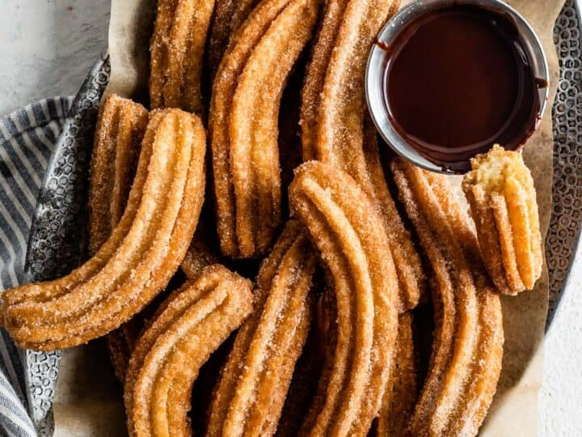

Churros

Description
These Mexican fritters are very common at fairs. In my border hometown, the line at this stand is always overwhelming. People wait hours in line just to get a taste of these churros. I have run across several recipes but this is the best one by far.
Ingredients
- 1 cup water
- 2 1/2 tablespoons white sugar
- 1/2 teaspoon salt
- 2 tablespoons vegetable oil
- 1 cup all-purpose flour
- 2 quarts oil for frying
- 1/2 cup white sugar, or to taste
- 1 teasoiin ground cinnamon
Steps
- In a small saucepan over medium heat, combine water, 2 1/2 tablespoons sugar, salt and 2 tablespoons vegetable oil. Bring to a boil and remove from heat. Stir in flour until mixture forms a ball.
- Heat oil for frying in a deep fryer or deep pot to 375 degrees F (190 degrees C). Pipe 5- to 6-inch strips of dough into the hot oil using a sturdy pastry bag fitted with a medium star tip. Do not overcrowd the oil. Fry until golden; drain on paper towels.
- Combine 1/2 cup sugar and cinnamon. Roll drained churros in cinnamon and sugar mixture.
Source: allrecipes